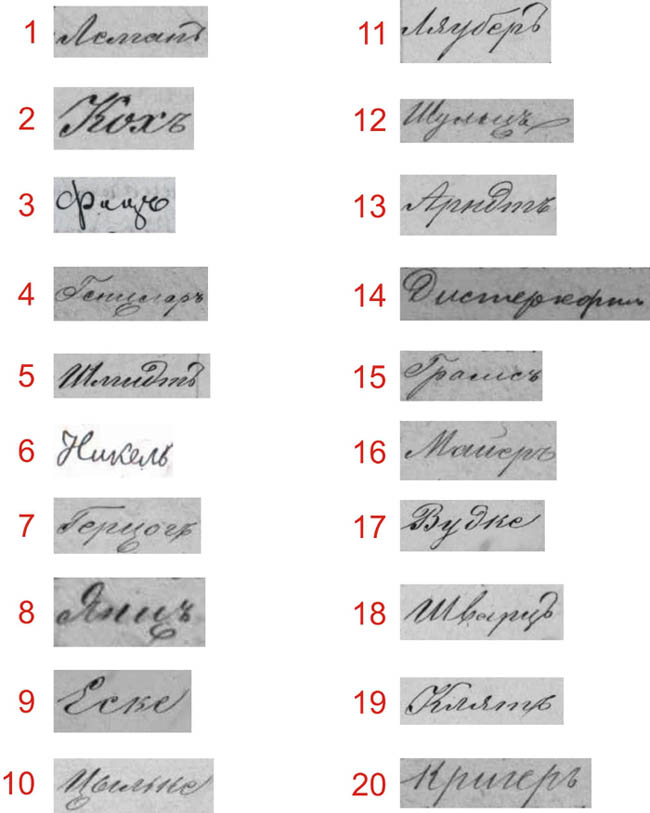

Anyone familiar with Cyrillic handwriting will admire the clarity of these examples written by different transcribers at the Lublin Evangelical church from 1870-1889. Remember that Russian uses different characters but similar sounds compared to German. So spellings of German names are generally translated phonetically. Can you determine the corresponding German surnames represented in these examples? The level of difficulty is easy with some of medium difficulty. (Answer key below the image.)

Answers are on the next page.